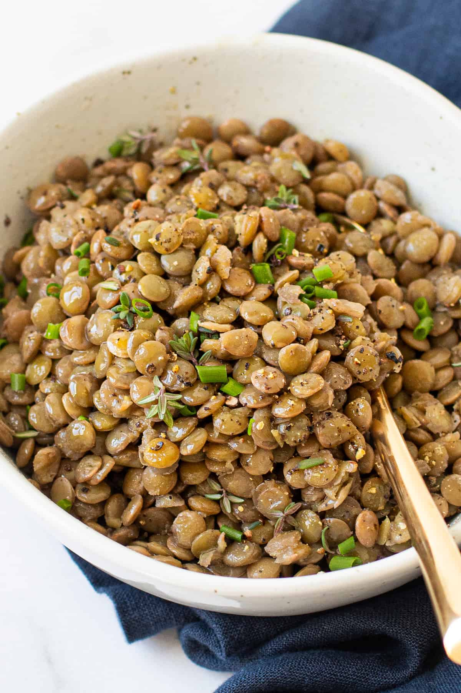

Lentils

Description
Heartwarming and nutrient-rich,
this traditional Greek lentil soup will be ready in only 20 minutes!
The perfect fall recipe that everyone will love!
Preparation time+cook time: 20min
Servings: 4
Ingredients:
- 250 g lentils
- 2 tablespoon(s) olive oil
- 1 onion
- 2 carrots
- 2 stick(s) celery
- 2 clove(s) of garlic
- salt
- pepper
- 1 teaspoon(s) cumin
- 400 g canned tomatoes
- 2 bay leaves
- 1 liter water
- served with olive oil
- Put the lentils in a bowl and add some cold water.
- Rinse the lentils well with your hands and drain them into a second bowl.
- Place the pressure cooker over high heat and allow it to heat up well.
- Finely chop the onion, the carrots, and the celery.
- In the pressure cooker add the olive oil, the finely chopped vegetables, garlic, salt,
pepper, and cumin, stir with a wooden spoon, and sauté them for 2-3 minutes.
- Add the lentils, canned tomatoes, bay leaves, and water, stir,
seal the pressure cooker with the lid, and turn the safety valve to the proper pressure indicator.
- Lower the heat and simmer the lentil soup for 15-20 minutes.
- Depressurize the pressure cooker, turn off the heat, and open the lid.
- Divide the lentil soup among plates and serve with vinegar, olive oil, pepper, anchovies, and olives.